Práctica: Configuración de Active Directory en AWS Academy¶
Objetivos¶
Durante esta práctica aprenderás a configurar Active Directory Domain Services (AD DS) en una instancia de Windows Server en AWS Academy y unir clientes al dominio. Esta práctica complementa la PR302 y te permitirá trabajar con servicios de directorio propietarios en un entorno cloud.
Al finalizar esta práctica serás capaz de:
- Configurar Active Directory Domain Services en Windows Server 2025 en AWS.
- Configurar DHCP en AWS para soportar el dominio de Active Directory.
- Configurar grupos de seguridad para permitir los servicios necesarios de Active Directory.
- Promover un servidor a controlador de dominio.
- Crear y unir clientes al dominio de Active Directory.
- Configurar acceso remoto RDP para usuarios del dominio.
- Documentar el proceso completo de configuración.
Requisitos previos¶
Antes de comenzar, asegúrate de tener completada la PR302 o tener:
- Una instancia de Windows Server 2025 funcionando en AWS EC2 y accesible mediante RDP.
- Una segunda instancia de Windows Server o Windows 10/11 como cliente.
- Acceso RDP a ambas instancias.
- Conocimiento básico de Active Directory y conceptos de dominio.
- Acceso a AWS Academy con créditos disponibles.
Nota importante
Esta práctica requiere dos instancias de Windows Server (o una de servidor y una de cliente). Asegúrate de tener suficientes créditos en AWS Academy Learner Lab.
Tareas a realizar¶
- Preparación del entorno:
- Asegúrate de tener completada la PR302 o tener dos instancias de Windows funcionando.
- Anota las IPs privadas de ambas instancias.
- Configuración de DHCP en AWS:
- Crea un conjunto de opciones de DHCP con el nombre de dominio y servidor DNS.
- Asocia el conjunto de opciones a la VPC.
- Reinicia las instancias para aplicar los cambios.
- Configuración del grupo de seguridad:
- Añade las reglas necesarias para Active Directory (DNS, LDAP, Kerberos, SMB, RPC, etc.).
- Verifica que todas las reglas están correctamente configuradas.
- Instalación de Active Directory:
- Instala el rol Active Directory Domain Services.
- Promueve el servidor a controlador de dominio.
- Verifica que el dominio se creó correctamente.
- Preparación del servidor:
- Crea un usuario en el dominio y añádelo al grupo Administradores del dominio (Domain Admins) para poder gestionar el dominio y unir clientes.
- Unión del cliente al dominio:
- Verifica la conectividad y resolución DNS desde el cliente.
- Une el cliente al dominio.
- Verifica que el cliente aparece en el dominio.
- Configuración de acceso remoto:
- Configura el escritorio remoto para usuarios del dominio.
- Conecta usando credenciales del dominio.
- Verifica que el acceso funciona correctamente.
- Documentación:
- Crea un documento que explique:
- Los conceptos de Active Directory Domain Services.
- El proceso de configuración de DHCP en AWS.
- La configuración de grupos de seguridad para Active Directory.
- Los pasos realizados para la instalación y configuración.
- Capturas de pantalla que demuestren el funcionamiento.
- Problemas encontrados y soluciones aplicadas.
Entregables¶
Para la entrega de esta práctica, deberás proporcionar:
- Documentación:
- Documento en Markdown con:
- Descripción de Active Directory Domain Services.
- Proceso de configuración de DHCP en AWS para el dominio.
- Configuración de grupos de seguridad para Active Directory.
- Pasos seguidos para la instalación de AD DS.
- Proceso de promoción a controlador de dominio.
- Creación de un usuario administrador del dominio (Domain Admins).
- Pasos para unir un cliente al dominio.
- Configuración de acceso remoto para usuarios del dominio.
- Capturas de pantalla del proceso completo.
- Comandos utilizados y su explicación.
- Verificación del funcionamiento del dominio.
- Evidencias:
- Las capturas de pantalla deben mostrar:
- Configuración de DHCP en AWS.
- Asociación del conjunto de opciones DHCP a la VPC.
- Configuración del grupo de seguridad con los puertos de Active Directory.
- Instalación de Active Directory Domain Services.
- Promoción a controlador de dominio.
- Usuario del dominio añadido al grupo Domain Admins.
- Cliente unido al dominio.
- Configuración de escritorio remoto para usuarios del dominio.
- Conexión RDP usando credenciales del dominio.
- Verificación del dominio con comandos de PowerShell.
Introducción¶
¿Qué es Active Directory Domain Services?¶
Active Directory Domain Services (AD DS) es el servicio de directorio de Microsoft que proporciona autenticación y autorización centralizadas para usuarios y equipos en una red Windows. AD DS permite:
- Gestión centralizada de usuarios, equipos y recursos de red.
- Autenticación única (Single Sign-On) para usuarios.
- Políticas de grupo para gestionar configuraciones de equipos.
- Servicios de directorio para aplicaciones y servicios.
Active Directory en AWS¶
Configurar Active Directory en AWS permite:
- Trabajar con servicios de directorio en un entorno cloud.
- Entender cómo los servicios de AWS (VPC, DHCP, Security Groups) interactúan con Active Directory.
- Practicar la configuración de dominios en un entorno realista.
- Preparar para escenarios de migración o híbridos (on-premises y cloud).
Recursos de apoyo
Paso 0: Preparar las instancias¶
Requisito previo: Completar PR302¶
Esta práctica asume que ya has completado la PR302: Acceso remoto a Windows Server en AWS Academy y tienes:
- Instancia del servidor: Windows Server 2025 funcionando y accesible mediante RDP.
- IP privada del servidor: Anota la IP privada de la instancia del servidor (ej:
172.31.49.71).
Crear una instancia cliente¶
Si no tienes una segunda instancia, crea una siguiendo los pasos de la PR302:
- Crea una nueva instancia en EC2 con:
- AMI: Windows Server 2025 Base (o Windows 10/11 si está disponible)
- Tipo: t3.large
- Misma VPC y subred que el servidor
- Grupo de seguridad: Permite RDP (3389)
- Clave: La misma que usaste para el servidor
- Conecta mediante RDP a la instancia cliente y anota su IP privada.
Paso 1: Configurar el nombre del equipo servidor¶
Antes de instalar Active Directory, debemos configurar un nombre apropiado para el servidor:
- Conecta mediante RDP a tu instancia de Windows Server.
- Abre "Configuración" → "Sistema" → "Acerca de".
- Haz clic en "Cambiar el nombre de este equipo" (o "Cambiar" en "Renombrar este equipo").
- Introduce un nombre descriptivo (ej:
DC01,SRV-AD01,SERVER-AD). - Haz clic en "Siguiente" y reinicia la instancia cuando se solicite.
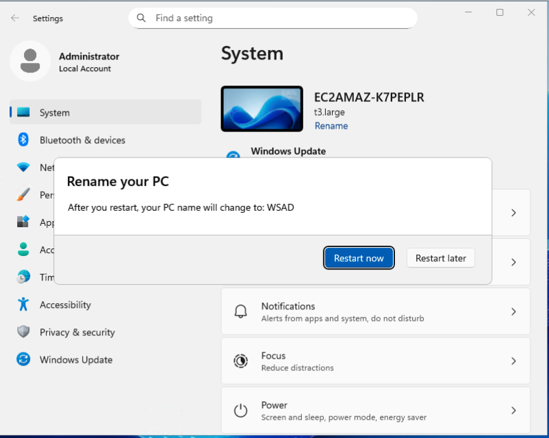
Nota
El nombre del equipo debe cumplir con las convenciones de nomenclatura de Windows:
- Máximo 15 caracteres
- Solo letras, números e hyphens
- No puede contener espacios ni caracteres especiales
Paso 2: Configurar DHCP en AWS¶
Para que los clientes puedan unirse al dominio y resolver nombres correctamente, necesitamos configurar DHCP en AWS para que proporcione la información del dominio y el servidor DNS.
1. Obtener la IP privada del servidor¶
- En la consola de EC2, selecciona tu instancia del servidor.
- En la pestaña "Detalles", busca "Dirección IPv4 privada".
- Anota esta IP (ej:
172.31.49.71).
2. Crear conjunto de opciones de DHCP¶
- En la consola de AWS, busca "VPC" en la barra de búsqueda de servicios.
- Haz clic en "VPC" para acceder al servicio.
- En el menú lateral, haz clic en "Conjuntos de opciones de DHCP".
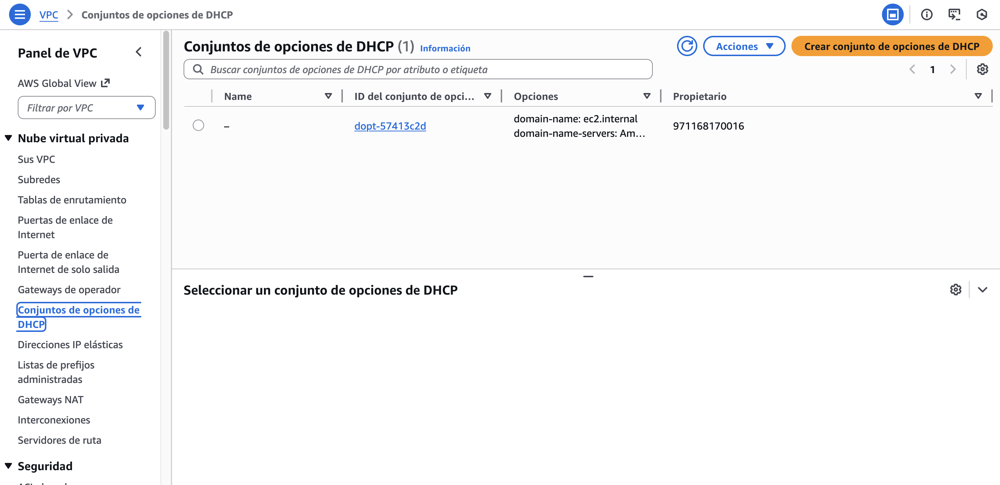
- Haz clic en "Crear conjunto de opciones de DHCP" (Create DHCP options set), y rellena los campos del formulario de la siguiente manera:
- Nombre: Escribe un nombre identificativo, por ejemplo:
DHCP_AD. - Nombre de dominio: Introduce el dominio DNS que utilizarán tus equipos, por ejemplo:
empresa.localo el nombre de dominio que vayas a utilizar en Active Directory. - Servidores de nombres de dominio: Escribe la IP privada de tu instancia de Windows Server (por ejemplo:
172.31.49.71). Así, todos los clientes obtendrán como DNS principal tu controlador de dominio. - Puedes dejar las demás opciones (NetBIOS, etiquetas) en blanco o su valor predeterminado, salvo que se indique lo contrario en tu práctica.
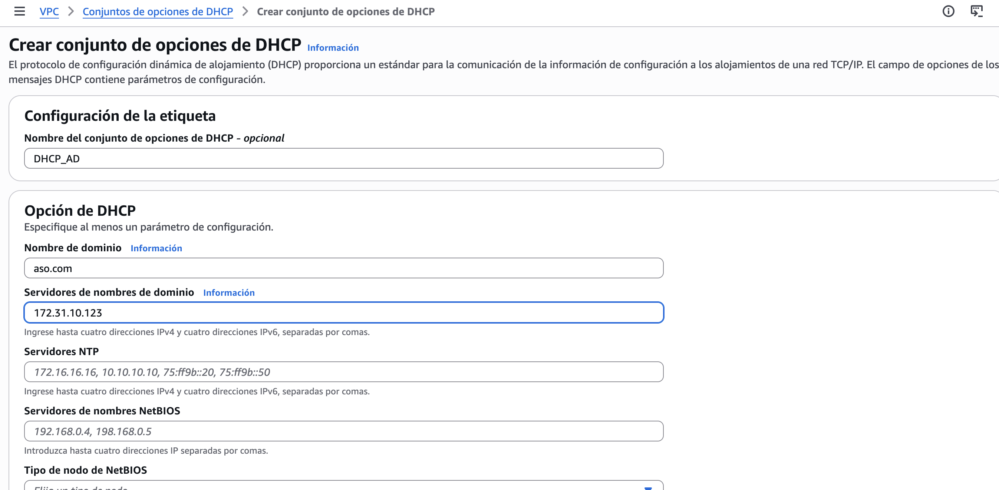
Importante
Asegúrate de que la IP indicada como "servidor de nombres de dominio" sea exactamente la IP privada de tu Windows Server donde instalarás Active Directory. Si este valor no es correcto, los clientes no podrán usar el DNS del controlador de dominio y no funcionará la unión al dominio.
Convenciones de nombres de dominio
Puedes usar:
- Dominios locales:
.local(ej:empresa.local) - Recomendado para prácticas - Dominios públicos:
.com,.net, etc. (ej:miempresa.com) - Solo si no tienes conflicto con dominios reales - Evita usar: Dominios que ya existen en Internet (ej:
google.com,microsoft.com)
3. Asociar el conjunto de opciones a la VPC¶
- En el menú lateral de VPC, haz clic en "Sus VPC" (Your VPCs).
- Selecciona tu VPC (normalmente hay una VPC predeterminada en AWS Academy).
- Haz clic en "Acciones" → "Editar la configuración de VPC" (Edit VPC configuration).
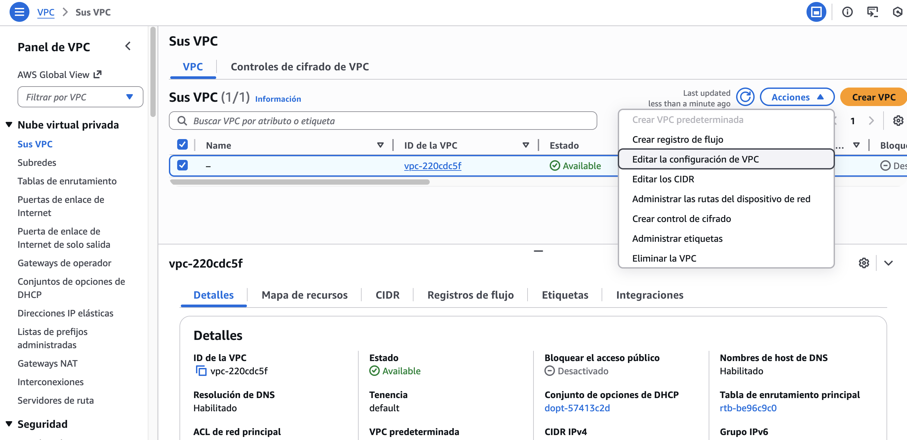
- En la sección "Configuración de DHCP", selecciona el conjunto de opciones que acabas de crear (ej:
DHCP_AD) en el menú desplegable "Conjunto de opciones de DHCP". - Haz clic en "Guardar" para aplicar los cambios.
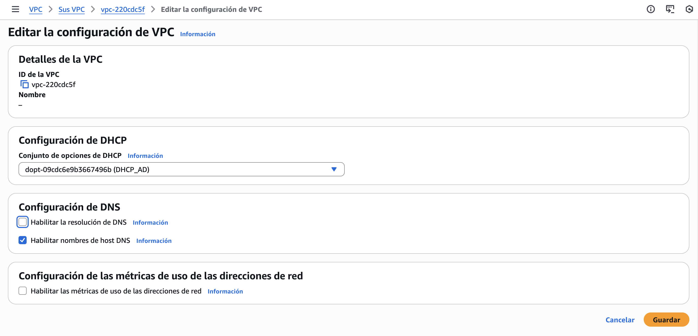
4. Reiniciar las instancias¶
Para que los cambios de DHCP surtan efecto:
- Reinicia ambas instancias (servidor y cliente):
- En EC2, selecciona cada instancia
- Acciones → Estado de la instancia → Reiniciar
- Espera a que ambas instancias vuelvan al estado "En ejecución".
Nota importante
Después de reiniciar, las instancias obtendrán nuevas configuraciones de red desde DHCP, incluyendo el nombre de dominio y el servidor DNS configurado.
- Tras el reinicio, verifica en el cliente que la configuración de red ha recibido el nombre de dominio y el servidor DNS correcto:
- Abre una terminal (cmd.exe) en el cliente y ejecuta:
ipconfig /all -
Busca la sección de tu adaptador de red y asegúrate de que:
- El servidor DNS sea la IP privada del Windows Server AD.
- El sufijo DNS coincida con el dominio configurado (ej:
empresa.local).
-
Si la información no ha cambiado, reinicia nuevamente el cliente o ejecuta directamente:
ipconfig /renew -
Si todo es correcto, ya puedes continuar con la configuración de Active Directory y la unión de clientes al dominio.
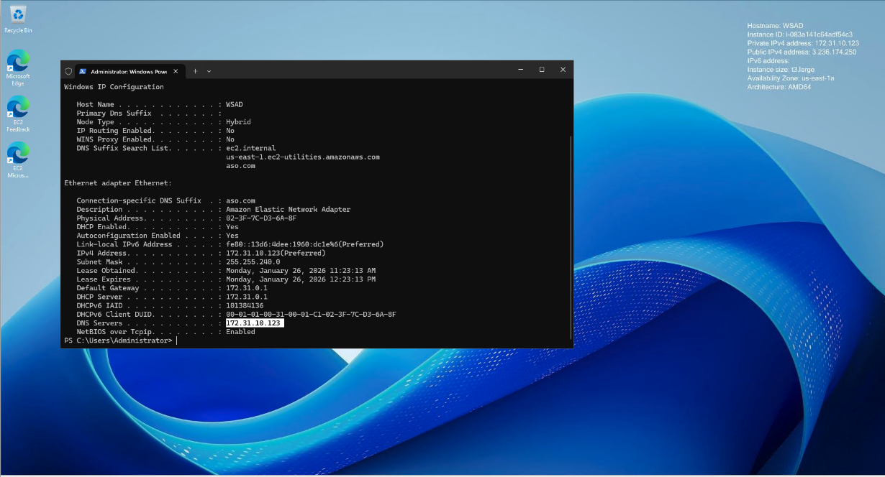
Paso 3: Configurar el grupo de seguridad para Active Directory¶
Active Directory requiere varios puertos de red para funcionar correctamente. Debemos configurar el grupo de seguridad para permitir estos servicios.
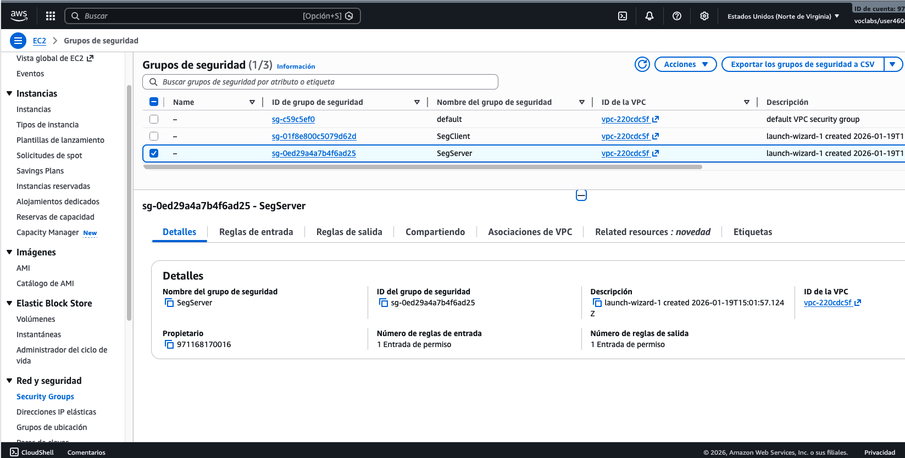
Puertos necesarios para Active Directory¶
Active Directory utiliza los siguientes puertos:
- DNS (53 TCP/UDP): Resolución de nombres de dominio
- LDAP (389 TCP): Consultas LDAP no cifradas
- LDAP SSL (636 TCP): Consultas LDAP cifradas
- Kerberos (88 TCP/UDP): Autenticación Kerberos
- SMB (445 TCP): Compartir archivos y recursos
- RPC (135 TCP): Llamadas a procedimientos remotos
- RPC dinámico (49152-65535 TCP): Puertos dinámicos de RPC
- ICMP: Ping (opcional, pero útil para pruebas)
Configurar el grupo de seguridad¶
- En la consola de EC2, selecciona tu instancia del servidor.
- En la pestaña "Seguridad", haz clic en el nombre del grupo de seguridad.
-
Haz clic en "Editar reglas de entrada" (Edit inbound rules).
-
Añade las siguientes reglas:
| Tipo | Protocolo | Puerto | Origen | Descripción |
|---|---|---|---|---|
| DNS | TCP | 53 | 0.0.0.0/0 | DNS TCP |
| DNS | UDP | 53 | 0.0.0.0/0 | DNS UDP |
| LDAP | TCP | 389 | 0.0.0.0/0 | LDAP |
| LDAPS | TCP | 636 | 0.0.0.0/0 | LDAP SSL |
| Kerberos | TCP | 88 | 0.0.0.0/0 | Kerberos TCP |
| Kerberos | UDP | 88 | 0.0.0.0/0 | Kerberos UDP |
| SMB | TCP | 445 | 0.0.0.0/0 | SMB/CIFS |
| RPC | TCP | 135 | 0.0.0.0/0 | RPC Endpoint Mapper |
| TCP personalizado | TCP | 49152-65535 | 0.0.0.0/0 | RPC dinámico |
| ICMP | ICMP | Todos | 0.0.0.0/0 | Ping (opcional) |
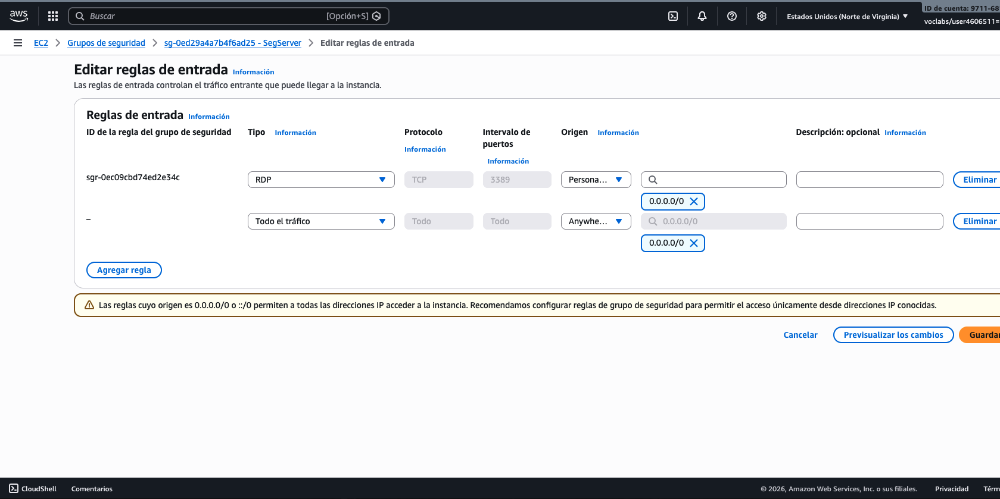
Seguridad en producción
En un entorno de producción, NO deberías permitir estos puertos desde 0.0.0.0/0. En su lugar:
- Permite solo desde la VPC (ej:
172.31.0.0/16) - O desde IPs específicas
- Para prácticas educativas,
0.0.0.0/0es aceptable
- Haz clic en "Guardar reglas".
Paso 4: Instalar Active Directory Domain Services¶
Guía paso a paso recomendada
Consulta también la guía completa y visual de instalación de Active Directory en este enlace:
Guía de instalación Active Directory paso a paso (fjavier-hernandez.github.io)
A continuación se detallan de manera resumida los pasos para instalar Active Directory, siguiendo la guía mencionada anteriormente.
1. Conectar al servidor¶
- Conecta mediante RDP a tu instancia de Windows Server.
- Abre "Administrador del servidor" (Server Manager) si no se abre automáticamente.
2. Instalar el rol AD DS¶
-
En el Administrador del servidor, haz clic en "Administrar" → "Agregar roles y características" (Add Roles and Features).
-
Sigue el asistente:
- Página "Antes de comenzar": Haz clic en "Siguiente".
- Tipo de instalación: Selecciona "Instalación basada en características o roles" → "Siguiente".
- Selección del servidor: Selecciona tu servidor → "Siguiente".
- Roles del servidor: Marca "Active Directory Domain Services" → Se abrirá un cuadro de diálogo, haz clic en "Agregar características" → "Siguiente".
- Características: No necesitas agregar características adicionales → "Siguiente".
- Confirmación: Revisa la configuración → "Instalar".
-
Espera a que se complete la instalación (puede tardar varios minutos).
-
Haz clic en "Cerrar" cuando termine la instalación.
3. Promover el servidor a controlador de dominio¶
-
En el Administrador del servidor, verás una notificación (bandera amarilla) indicando que se requiere configurar AD DS.
-
Haz clic en la notificación → "Promover este servidor a controlador de dominio" (Promote this server to a domain controller).
-
Sigue el asistente de configuración:
-
Configuración de implementación:
- Selecciona "Agregar un nuevo bosque" (Add a new forest)
- Nombre de dominio raíz: Introduce el nombre de dominio que configuraste en DHCP (ej:
empresa.local)
-
Opciones del controlador de dominio:
- Nivel funcional del bosque: Windows Server 2016 o superior (según tu versión)
- Nivel funcional del dominio: Windows Server 2016 o superior
- Especifica las opciones del controlador de dominio: Marca "Servidor DNS" y "Servidor de catálogo global (GC)"
-
Opciones de DNS:
- Si aparece una advertencia sobre delegación DNS, puedes hacer clic en "Siguiente" (la delegación se creará automáticamente)
-
Opciones adicionales:
- Nombre NetBIOS del dominio: Se generará automáticamente (ej:
EMPRESA) - Puedes cambiarlo si lo deseas
- Nombre NetBIOS del dominio: Se generará automáticamente (ej:
-
Rutas:
- Acepta las rutas predeterminadas para la base de datos de AD, los archivos de registro y SYSVOL
-
Revisión de opciones:
- Revisa la configuración
- Haz clic en "Siguiente"
-
Comprobación de requisitos previos:
- El asistente verificará que todo esté listo
- Si hay advertencias, puedes hacer clic en "Instalar" de todos modos
-
Haz clic en "Instalar".
-
El servidor se reiniciará automáticamente cuando termine la configuración (puede tardar 10-15 minutos).
-
Espera a que el servidor se reinicie y vuelva al estado "En ejecución" en EC2.
-
Vuelve a conectar mediante RDP al servidor (ahora deberás usar el formato
DOMINIO\Administratorpara iniciar sesión).
4. Alternativa: Instalar y promover el servidor usando PowerShell¶
También puedes instalar el rol de Active Directory Domain Services y promover el servidor a controlador de dominio completamente usando PowerShell. Este método es útil para automatización o si prefieres trabajar desde la línea de comandos.
Pasos completos usando PowerShell:
-
Abre PowerShell como Administrador en el servidor Windows.
-
Instala el rol de Active Directory Domain Services:
# Instalar el rol AD DS con las herramientas de administración
Install-WindowsFeature -Name AD-Domain-Services -IncludeManagementTools
# Verificar que se instaló correctamente
Get-WindowsFeature -Name AD-Domain-Services
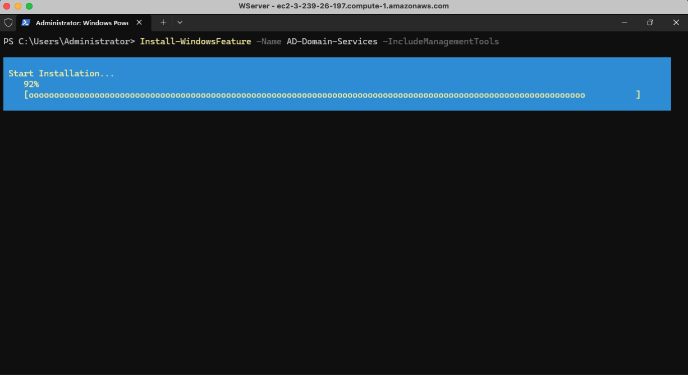
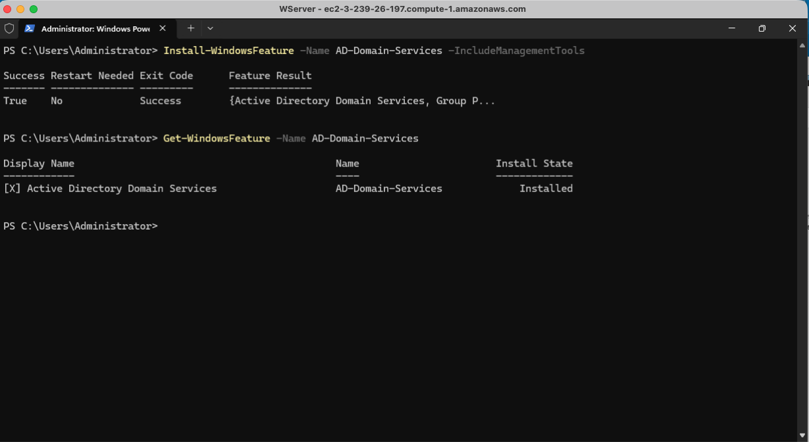
Verificación de instalación
El comando Get-WindowsFeature debería mostrar que el rol está instalado. Si ves [X] junto al nombre del rol, significa que está instalado correctamente.
- Verifica que el módulo ADDSDeployment está disponible:
# Comprobar si el módulo está disponible (debe estar después de instalar AD DS)
Get-Module -ListAvailable -Name ADDSDeployment
# Comprobar si el módulo está cargado en la sesión actual
Get-Module -Name ADDSDeployment
Interpretación de los resultados
- Si
Get-Module -ListAvailablemuestra el módulo: El módulo está instalado, pero puede que no esté cargado en la sesión actual. - Si
Get-Module -Name ADDSDeploymentmuestra el módulo: El módulo ya está cargado en la sesión y no necesitas importarlo. - Si no aparece ningún resultado después de instalar AD DS: Cierra y vuelve a abrir PowerShell como Administrador, o reinicia el servidor para volver a intentarlo.
- Importa el módulo de Active Directory:
# Importar el módulo (solo si no está cargado)
Import-Module ADDSDeployment
# O usar -Force para recargar el módulo si ya estaba cargado
Import-Module ADDSDeployment -Force
Nota sobre el módulo
Si después de instalar AD DS sigues sin poder importar el módulo, intenta:
- Cerrar y volver a abrir PowerShell como Administrador
- O reiniciar el servidor para asegurar que todos los componentes se carguen correctamente
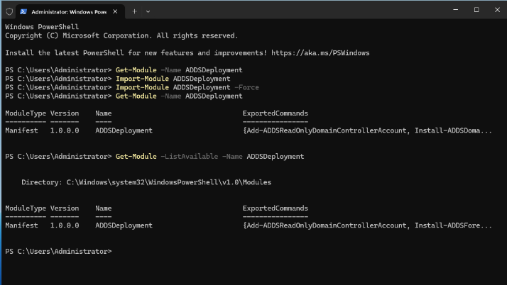
- Ejecuta el comando para crear el bosque y promover el servidor:
Install-ADDSForest ` -DomainName "empresa.local" ` -DomainNetbiosName "EMPRESA" ` -ForestMode "WinThreshold" ` -DomainMode "WinThreshold" ` -InstallDns:$true ` -CreateDnsDelegation:$false ` -DatabasePath "C:\Windows\NTDS" ` -LogPath "C:\Windows\NTDS" ` -SysvolPath "C:\Windows\SYSVOL" ` -SafeModeAdministratorPassword (ConvertTo-SecureString "TuContraseñaSegura123!" -AsPlainText -Force) ` -Force:$true
Parámetros explicados:
-DomainName: Nombre del dominio DNS (debe coincidir con el configurado en DHCP)-DomainNetbiosName: Nombre NetBIOS del dominio (máximo 15 caracteres)-ForestModey-DomainMode: Nivel funcional. Valores válidos según la versión de Windows Server:Win2008: Windows Server 2008Win2008R2: Windows Server 2008 R2Win2012: Windows Server 2012Win2012R2: Windows Server 2012 R2WinThreshold: Windows Server 2016, 2019 y 2022Win2025: Windows Server 2025Default: Usa el nivel funcional por defecto según la versión del servidor-InstallDns:$true: Instala el servidor DNS-CreateDnsDelegation:$false: No crea delegación DNS (no necesario en AWS Academy)-DatabasePath,-LogPath,-SysvolPath: Rutas para los archivos de AD (valores por defecto)-SafeModeAdministratorPassword: Contraseña para el modo de recuperación de servicios de directorio (DSRM)-Force:$true: Ejecuta sin confirmación interactiva
Niveles funcionales recomendados
- Para Windows Server 2016, 2019 o 2022: Usa
WinThreshold - Para Windows Server 2025: Usa
Win2025 - Si no estás seguro: Usa
Defaulty Windows seleccionará automáticamente el nivel apropiado
Importante
- El servidor se reiniciará automáticamente después de ejecutar el comando.
- Asegúrate de usar una contraseña segura para el modo seguro (DSRM).
- El proceso puede tardar 10-15 minutos en completarse.
- Después del reinicio, deberás iniciar sesión con
DOMINIO\Administrator.
Ejemplo completo con valores personalizados:
# Paso 1: Instalar el rol AD DS
Install-WindowsFeature -Name AD-Domain-Services -IncludeManagementTools
# Paso 2: Importar el módulo
Import-Module ADDSDeployment
# Paso 3: Crear el bosque y promover el servidor
$SecurePassword = ConvertTo-SecureString "MiPasswordSeguro123!" -AsPlainText -Force
Install-ADDSForest `
-DomainName "aso.com" `
-DomainNetbiosName "aso" `
-ForestMode "WinThreshold" `
-DomainMode "WinThreshold" `
-InstallDns:$true `
-CreateDnsDelegation:$false `
-SafeModeAdministratorPassword $SecurePassword `
-Force:$true
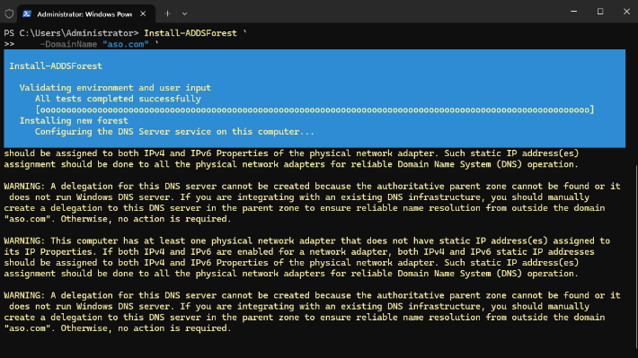
Verificar el estado después del reinicio:
# Verificar que el dominio se creó correctamente
Get-ADDomain
# Verificar que el servidor es controlador de dominio
Get-ADDomainController
# Verificar servicios de AD
Get-Service NTDS, DNS, Netlogon
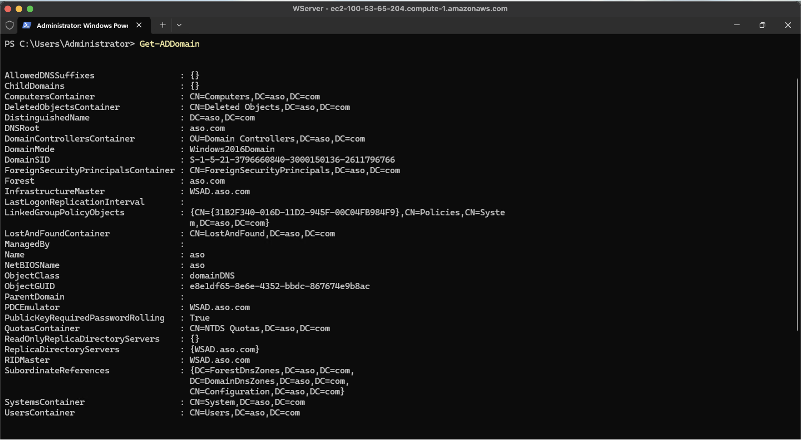
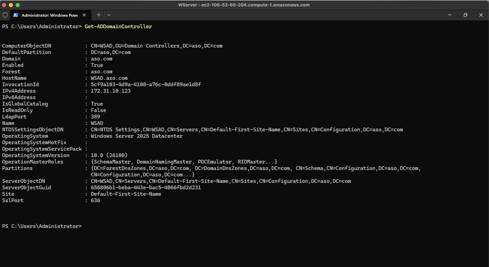
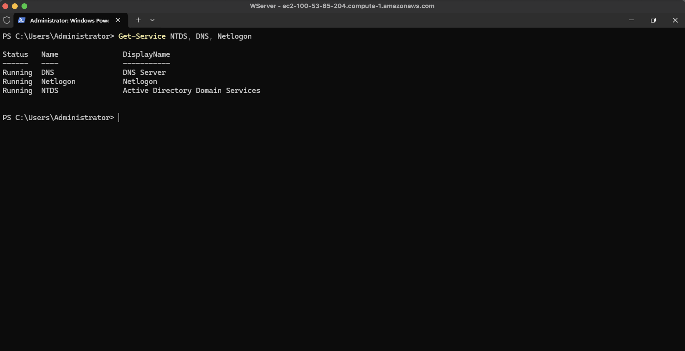
Paso 5: Preparación del Active Directory¶
Tras promover el servidor a controlador de dominio, es recomendable crear un usuario del dominio que pertenezca al grupo Administradores del dominio (Domain Admins). Así podrás usar esa cuenta para unir clientes, gestionar el dominio y conectarte por RDP sin depender únicamente de la cuenta Administrator integrada.
1. Crear un usuario y añadirlo a Domain Admins (interfaz gráfica)¶
- Conecta mediante RDP al controlador de dominio con la cuenta
Administrator. - Abre "Usuarios y equipos de Active Directory":
- En el menú Inicio, escribe "Active Directory Users and Computers" o "dsa.msc" y ejecútalo.
- Crea el usuario:
- En el panel izquierdo, expande tu dominio (ej:
empresa.local). - Haz clic derecho en la carpeta "Users" (o en una unidad organizativa si la tienes) → Nuevo → Usuario.
- Nombre: Nombre del usuario (ej:
admin.dominio). - Nombre completo: Nombre para mostrar (ej:
Administrador del dominio). - Contraseña: Elige una contraseña segura y marca "La contraseña no caduca" si es para prácticas.
- Haz clic en Siguiente y Finalizar.
- Añadir el usuario al grupo Domain Admins:
- En Usuarios y equipos de Active Directory, ve al contenedor "Users".
- Haz doble clic en el grupo "Domain Admins".
- Pestaña Miembros → Agregar.
- Escribe el nombre del usuario que acabas de crear (ej:
admin.dominio) → Comprobar nombres → Aceptar → Aceptar.
Desde ese momento puedes usar DOMINIO\admin.dominio (y su contraseña) para unir clientes al dominio, gestionar AD y conectarte por RDP como administrador del dominio.
2. Crear un usuario y añadirlo a Domain Admins (PowerShell)¶
En el controlador de dominio, abre PowerShell como Administrador y ejecuta:
# Variables: cambia por tu dominio y el nombre de usuario deseado
$nombreDominio = "empresa.local" # ej: aso.com, empresa.local
$nombreUsuario = "admin.dominio"
$nombreCompleto = "Administrador del dominio"
$contraseña = "TuContraseñaSegura123!" # Usa una contraseña segura
# Crear la contraseña segura
$pass = ConvertTo-SecureString $contraseña -AsPlainText -Force
# Crear el usuario en el dominio
New-ADUser -Name $nombreUsuario `
-DisplayName $nombreCompleto `
-UserPrincipalName "$nombreUsuario@$nombreDominio" `
-AccountPassword $pass `
-Enabled $true `
-PasswordNeverExpires $true
# Añadir el usuario al grupo Domain Admins
Add-ADGroupMember -Identity "Domain Admins" -Members $nombreUsuario
# Verificar que el usuario está en Domain Admins
Get-ADGroupMember -Identity "Domain Admins"
Uso posterior
Puedes usar DOMINIO\admin.dominio (ej: EMPRESA\admin.dominio) para unir clientes al dominio, configurar escritorio remoto y realizar tareas de administración del dominio en lugar de usar siempre Administrator.
Paso 6: Unir un cliente al dominio¶
1. Preparar el cliente¶
- Conecta mediante RDP a la instancia cliente.
- Verifica la conectividad:
- Abre el Símbolo del sistema (CMD) o PowerShell.
- Ejecuta
ping <IP_SERVIDOR>para verificar que puede alcanzar el servidor. - Ejecuta
nslookup <DOMINIO>(ej:nslookup empresa.local) para verificar la resolución DNS.
2. Unir el cliente al dominio¶
Guía paso a paso recomendada
Consulta también la guía completa y visual para unir clientes al dominio en este enlace:
Unir clientes al dominio - Guía paso a paso (fjavier-hernandez.github.io)
- Abre "Configuración" → "Sistema" → "Acerca de".
- Haz clic en "Cambiar" junto a "Unirse a un dominio o grupo de trabajo" (o "Cambiar el nombre de este equipo").
- Selecciona "Dominio".
- Introduce el nombre del dominio (ej:
empresa.local). - Haz clic en "Aceptar".
- Se solicitarán credenciales de administrador del dominio:
- Usuario:
Administrator(oDOMINIO\Administrator) - Contraseña: La contraseña del administrador del dominio
- Haz clic en "Aceptar".
- Verás un mensaje de bienvenida al dominio.
- Reinicia el equipo cuando se solicite.
3. Unir el cliente al dominio mediante PowerShell¶
También puedes unir el cliente al dominio usando PowerShell. Sigue estos pasos:
-
Abre PowerShell como Administrador en la máquina cliente.
-
Ejecuta el siguiente comando para unir el equipo al dominio:
$dominio = "aso.com" # Cambia por tu dominio (ej: empresa.local)
Add-Computer -DomainName $dominio -Credential (Get-Credential "$dominio\Administrator")
Atención
- Reemplaza
aso.compor el nombre real de tu dominio. - Se abrirá una ventana solicitando usuario y contraseña. Introduce la contraseña del administrador del servidor (la misma que usas para conectarte por RDP al controlador de dominio). El nombre de usuario ya debe aparecer rellenado (por ejemplo:
aso.com\Administrator).
Ejemplo: unir el equipo al dominio con PowerShell
Add-Computer -DomainName "aso.com" -Credential (Get-Credential "ASO\Administrator")
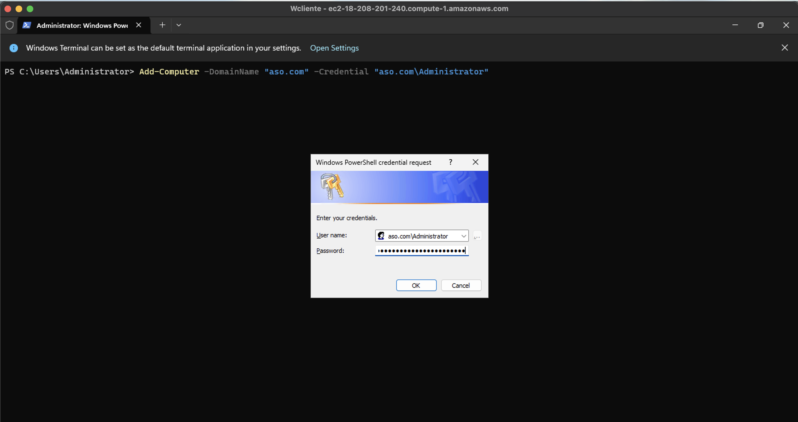
- Reinicia el equipo para completar la unión al dominio:
Restart-Computer
- Confirma que el equipo está unido al dominio después del reinicio:
(Get-WmiObject Win32_ComputerSystem).PartOfDomain
- Si el resultado es
True, el equipo está correctamente unido al dominio.
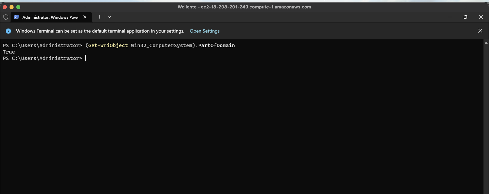
4. Verificar la unión al dominio¶
- Vuelve a conectar mediante RDP al cliente después del reinicio.
- Verifica el dominio:
- Abre "Configuración" → "Sistema" → "Acerca de".
- Deberías ver "Dominio" seguido del nombre de tu dominio.
- Prueba el inicio de sesión con credenciales del dominio:
- Cierra sesión.
- En la pantalla de inicio de sesión, haz clic en "Otra cuenta".
- Introduce:
DOMINIO\Administrator(ej:EMPRESA\Administrator). - Introduce la contraseña del administrador del dominio.
Paso 7: Configurar acceso remoto para usuarios del dominio¶
Para permitir que usuarios del dominio accedan mediante RDP a los equipos del dominio:
1. Configurar escritorio remoto en el servidor o cliente¶
- Conecta mediante RDP al servidor o cliente usando credenciales del dominio.
- Abre "Configuración avanzada del sistema":
- Presiona
Windows + R - Escribe
sysdm.cply presiona Enter - O ve a "Panel de control" → "Sistema" → "Configuración avanzada del sistema"
- Ve a la pestaña "Remoto".
- En "Escritorio remoto", selecciona "Permitir conexiones remotas a este equipo".
- Haz clic en "Seleccionar usuarios" (Select Users).
- Haz clic en "Agregar" (Add).
- En el campo de texto, introduce:
- "Domain Users" para permitir a todos los usuarios del dominio
- O un usuario específico (ej:
DOMINIO\usuario)
- Haz clic en "Comprobar nombres" para verificar que se reconoce.
- Haz clic en "Aceptar" en todas las ventanas.
Configurar escritorio remoto mediante PowerShell¶
También puedes configurar el escritorio remoto usando PowerShell. Sigue estos pasos:
-
Abre PowerShell como Administrador en el servidor o cliente.
-
Habilita el escritorio remoto:
# Habilitar escritorio remoto Set-ItemProperty -Path 'HKLM:\System\CurrentControlSet\Control\Terminal Server' -name "fDenyTSConnections" -Value 0 # Habilitar el firewall para RDP Enable-NetFirewallRule -DisplayGroup "Remote Desktop" -
Añadir usuarios o grupos al escritorio remoto:
Para permitir a todos los usuarios del dominio (recomendado en prácticas), ejecuta este comando completo en una sola vez:
Add-LocalGroupMember -Group "Remote Desktop Users" -Member "Domain Users"
Si aparece 'The argument is null or empty'
Ese error significa que se ha ejecutado Add-LocalGroupMember usando una variable ($group o $domainUser) que no está definida. Ejecuta el comando anterior tal cual, con el texto "Domain Users" entre comillas, o asegúrate de ejecutar todo el bloque de comandos que define la variable antes de usarla.
Alternativa: Añadir un usuario específico del dominio (sustituye EMPRESA y usuario por tu dominio y nombre de usuario):
Add-LocalGroupMember -Group "Remote Desktop Users" -Member "EMPRESA\usuario"
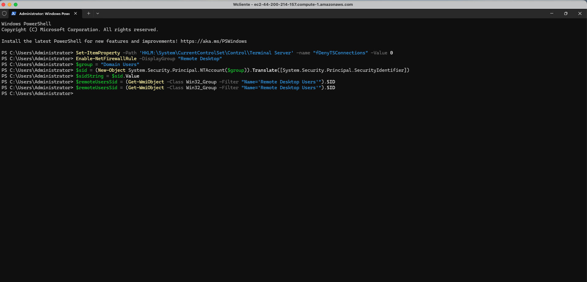
-
Verificar la configuración:
# Verificar que el escritorio remoto está habilitado (Get-ItemProperty -Path 'HKLM:\System\CurrentControlSet\Control\Terminal Server').fDenyTSConnections # Debe devolver 0 (habilitado) o 1 (deshabilitado) # Verificar los miembros del grupo Remote Desktop Users Get-LocalGroupMember -Group "Remote Desktop Users" -
Verificar las reglas del firewall:
# Verificar que las reglas de firewall están habilitadas Get-NetFirewallRule -DisplayGroup "Remote Desktop" | Where-Object {$_.Enabled -eq $true}
Comando completo en una sola línea
Si quieres hacer todo en un solo paso, puedes ejecutar:
# Habilitar RDP y añadir Domain Users
Set-ItemProperty -Path 'HKLM:\System\CurrentControlSet\Control\Terminal Server' -name "fDenyTSConnections" -Value 0
Enable-NetFirewallRule -DisplayGroup "Remote Desktop"
Add-LocalGroupMember -Group "Remote Desktop Users" -Member "Domain Users"
Nota sobre Domain Users
Si el equipo no está unido al dominio, el grupo "Domain Users" no existirá. En ese caso, usa usuarios locales o espera a unir el equipo al dominio primero.
2. Conectar usando credenciales del dominio¶
- Desde otro equipo (o desde tu máquina local), abre el cliente RDP.
- Introduce la IP pública del servidor o cliente.
- En la pantalla de autenticación, haz clic en "Más opciones" o "Usar otra cuenta".
- Introduce las credenciales en formato:
- Usuario:
DOMINIO\Usuario(ej:EMPRESA\Administrator) - Contraseña: La contraseña del usuario del dominio
- Acepta la advertencia de certificado si aparece.
- Deberías conectarte exitosamente usando las credenciales del dominio.
Paso 8: Verificar la configuración¶
Verificaciones básicas¶
- Verifica el dominio en el servidor:
# En PowerShell del servidor
Get-ADDomain
Get-ADForest
- Verifica la resolución DNS:
# Desde el cliente
nslookup empresa.local
Resolve-DnsName empresa.local
- Verifica la conectividad con el controlador de dominio:
# Desde el cliente
Test-ComputerSecureChannel -Credential (Get-Credential)
- Lista los equipos del dominio:
# Desde el servidor o cliente (con credenciales de dominio)
Get-ADComputer -Filter *